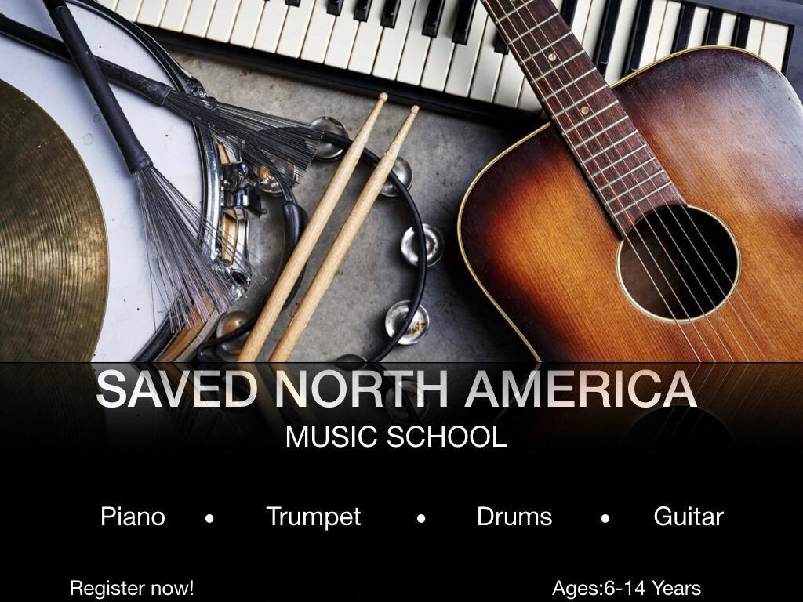

PROFILE

Literature and creative arts has always been my passion and still is. But the first day i took information systems 101 in college; i got goosebumps and i realised i have a niche for the Information Technology industry. After i finished college i started working for spectrum in the marketing department. we have educated customers on basic product knowledge,download speeds needed for internet usage and etc In recent times however, i have been learning how to become a front end developer and possibly a back end developer. After completion i will transition to the software department of Spectrum
Launched BTS20 campaign at Ohio State University.In our effort to help America recvover from the COVID-19 pandemic after campus were open.We helped the students with affordable internet prices and gave out cleaning supplies.

Priviledge to be working with some annoited pastors to help the youth chanel the strenght to good use and and make a spiritual investment in their lives by learning a musical instrument.“Music is a more potent instrument than any other for education, because rhythm and harmony find their way into the inward places of the soul.” – Plato
great to be a teacher.